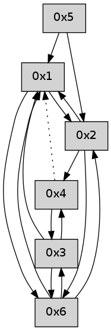

>> << IDX [start] -100 -25 -5 +0 +5 +25 +100 [510.003663063]
 Previous packets
----------------------------------------------------------------------
505.052614 beacon01(adaf) #0 coord=01,02,05,03,04,06 cycle=432.0ms assoc
-- color-indic=0 64 89 ab
505.062575 beacon02(adaf) #0 coord=01,02,05,03,04,06 cycle=432.0ms assoc 64 d8 54
505.072575 beacon05(adaf) #0 coord=01,02,05,03,04,06 cycle=432.0ms assoc 64 7e 7e
505.082575 beacon03(adaf) #0 coord=01,02,05,03,04,06 cycle=432.0ms assoc 64 e2 5a
505.092575 beacon04(adaf) #0 coord=01,02,05,03,04,06 cycle=432.0ms assoc 64 44 70
505.102576 beacon06(adaf) #0 coord=01,02,05,03,04,06 cycle=432.0ms assoc 64 30 6c
505.114303 [Hello(4): seq=304 sym=3,2 asym=6,1 sysInfo= stat=3:3,0,0,0/2:0,0,0,0/6:0,0,0,0/1:13,0,0,0]
505.119276 [Hello(1): seq=203 sym=2,6,3 sysInfo= stat=2:9,0,0,0/6:2,0,0,0/3:12,0,0,0]
----------------------------------------------------------------------
505.544721 beacon01(adaf) #0 coord=01,02,05,03,04,06 cycle=432.0ms assoc
-- color-indic=0 64 4d c4
505.554682 beacon02(adaf) #0 coord=01,02,05,03,04,06 cycle=432.0ms assoc 64 1c 3b
505.564684 beacon05(adaf) #0 coord=01,02,05,03,04,06 cycle=432.0ms assoc 64 ba 11
505.574683 beacon03(adaf) #0 coord=01,02,05,03,04,06 cycle=432.0ms assoc 64 26 35
505.584683 beacon04(adaf) #0 coord=01,02,05,03,04,06 cycle=432.0ms assoc 64 80 1f
505.594685 beacon06(adaf) #0 coord=01,02,05,03,04,06 cycle=432.0ms assoc 64 f4 03
----------------------------------------------------------------------
506.036829 beacon01(adaf) #0 coord=01,02,05,03,04,06 cycle=432.0ms assoc
-- color-indic=0 64 68 f9
506.046790 beacon02(adaf) #0 coord=01,02,05,03,04,06 cycle=432.0ms assoc 64 39 06
506.056789 beacon05(adaf) #0 coord=01,02,05,03,04,06 cycle=432.0ms assoc 64 9f 2c
506.066790 beacon03(adaf) #0 coord=01,02,05,03,04,06 cycle=432.0ms assoc 64 03 08
506.076793 beacon04(adaf) #0 coord=01,02,05,03,04,06 cycle=432.0ms assoc 64 a5 22
506.086791 beacon06(adaf) #0 coord=01,02,05,03,04,06 cycle=432.0ms assoc 64 d1 3e
506.098500 [Hello(4): seq=305 sym=3,2 asym=1 sysInfo= stat=3:4,0,0,0/2:0,0,0,0/1:14,0,0,0]
506.101542 [Hello(1): seq=204 sym=2,6,3 sysInfo= stat=2:10,0,0,0/6:2,0,0,0/3:12,0,0,0]
----------------------------------------------------------------------
506.528940 beacon01(adaf) #0 coord=01,02,05,03,04,06 cycle=432.0ms assoc
-- color-indic=0 64 ac 96
506.538902 beacon02(adaf) #0 coord=01,02,05,03,04,06 cycle=432.0ms assoc 64 fd 69
506.548901 beacon05(adaf) #0 coord=01,02,05,03,04,06 cycle=432.0ms assoc 64 5b 43
506.558901 beacon03(adaf) #0 coord=01,02,05,03,04,06 cycle=432.0ms assoc 64 c7 67
506.568903 beacon04(adaf) #0 coord=01,02,05,03,04,06 cycle=432.0ms assoc 64 61 4d
506.578902 beacon06(adaf) #0 coord=01,02,05,03,04,06 cycle=432.0ms assoc 64 15 51
----------------------------------------------------------------------
507.021050 beacon01(adaf) #0 coord=01,02,05,03,04,06 cycle=432.0ms assoc
-- color-indic=0 64 e0 26
507.031011 beacon02(adaf) #0 coord=01,02,05,03,04,06 cycle=432.0ms assoc 64 b1 d9
507.041010 beacon05(adaf) #0 coord=01,02,05,03,04,06 cycle=432.0ms assoc 64 17 f3
507.051011 beacon03(adaf) #0 coord=01,02,05,03,04,06 cycle=432.0ms assoc 64 8b d7
507.061011 beacon04(adaf) #0 coord=01,02,05,03,04,06 cycle=432.0ms assoc 64 2d fd
507.071011 beacon06(adaf) #0 coord=01,02,05,03,04,06 cycle=432.0ms assoc 64 59 e1
507.082703 [Hello(4): seq=306 sym=3,2 asym=1 sysInfo= stat=3:5,0,0,0/2:0,0,0,0/1:15,0,0,0]
507.086420 [Hello(1): seq=205 sym=2,6,3 sysInfo= stat=2:11,0,0,0/6:2,0,0,0/3:12,0,0,0]
----------------------------------------------------------------------
507.513160 beacon01(adaf) #0 coord=01,02,05,03,04,06 cycle=432.0ms assoc
-- color-indic=0 64 24 49
507.523122 beacon02(adaf) #0 coord=01,02,05,03,04,06 cycle=432.0ms assoc 64 75 b6
507.533123 beacon05(adaf) #0 coord=01,02,05,03,04,06 cycle=432.0ms assoc 64 d3 9c
507.543121 beacon03(adaf) #0 coord=01,02,05,03,04,06 cycle=432.0ms assoc 64 4f b8
507.553122 beacon04(adaf) #0 coord=01,02,05,03,04,06 cycle=432.0ms assoc 64 e9 92
507.563124 beacon06(adaf) #0 coord=01,02,05,03,04,06 cycle=432.0ms assoc 64 9d 8e
----------------------------------------------------------------------
508.005268 beacon01(adaf) #0 coord=01,02,05,03,04,06 cycle=432.0ms assoc
-- color-indic=0 64 69 4e
508.015228 beacon02(adaf) #0 coord=01,02,05,03,04,06 cycle=432.0ms assoc 64 38 b1
508.025228 beacon05(adaf) #0 coord=01,02,05,03,04,06 cycle=432.0ms assoc 64 9e 9b
508.035230 beacon03(adaf) #0 coord=01,02,05,03,04,06 cycle=432.0ms assoc 64 02 bf
508.045229 beacon04(adaf) #0 coord=01,02,05,03,04,06 cycle=432.0ms assoc 64 a4 95
508.055230 beacon06(adaf) #0 coord=01,02,05,03,04,06 cycle=432.0ms assoc 64 d0 89
508.066663 [Hello(1): seq=206 sym=2,3 sysInfo= stat=2:12,0,0,0/3:12,0,0,0]
508.070574 [Hello(4): seq=307 sym=3,2 asym=1 sysInfo= stat=3:6,0,0,0/2:0,0,0,0/1:0,0,0,0]
----------------------------------------------------------------------
508.497378 beacon01(adaf) #0 coord=01,02,05,03,04,06 cycle=432.0ms assoc
-- color-indic=0 64 ad 21
508.507339 beacon02(adaf) #0 coord=01,02,05,03,04,06 cycle=432.0ms assoc 64 fc de
508.517340 beacon05(adaf) #0 coord=01,02,05,03,04,06 cycle=432.0ms assoc 64 5a f4
508.527341 beacon03(adaf) #0 coord=01,02,05,03,04,06 cycle=432.0ms assoc 64 c6 d0
508.537339 beacon04(adaf) #0 coord=01,02,05,03,04,06 cycle=432.0ms assoc 64 60 fa
508.547341 beacon06(adaf) #0 coord=01,02,05,03,04,06 cycle=432.0ms assoc 64 14 e6
508.559025 [Hello(2): seq=803 sym=4,1,6 sysInfo= stat=4:1,0,0,0/1:11,0,0,0/6:11,0,0,0]
----------------------------------------------------------------------
508.989486 beacon01(adaf) #0 coord=01,02,05,03,04,06 cycle=432.0ms assoc
-- color-indic=0 64 e1 91
508.999446 beacon02(adaf) #0 coord=01,02,05,03,04,06 cycle=432.0ms assoc 64 b0 6e
509.009447 beacon05(adaf) #0 coord=01,02,05,03,04,06 cycle=432.0ms assoc 64 16 44
509.019447 beacon03(adaf) #0 coord=01,02,05,03,04,06 cycle=432.0ms assoc 64 8a 60
509.029447 beacon04(adaf) #0 coord=01,02,05,03,04,06 cycle=432.0ms assoc 64 2c 4a
509.039448 beacon06(adaf) #0 coord=01,02,05,03,04,06 cycle=432.0ms assoc 64 58 56
509.050569 [Hello(1): seq=207 sym=2,6 sysInfo= stat=2:13,0,0,0/6:0,0,0,0]
509.054794 [Hello(4): seq=308 sym=3 asym=1 sysInfo= stat=3:7,0,0,0/1:0,0,0,0]
----------------------------------------------------------------------
509.481595 beacon01(adaf) #0 coord=01,02,05,03,04,06 cycle=432.0ms assoc
-- color-indic=0 64 25 fe
509.491555 beacon02(adaf) #0 coord=01,02,05,03,04,06 cycle=432.0ms assoc 64 74 01
509.501556 beacon05(adaf) #0 coord=01,02,05,03,04,06 cycle=432.0ms assoc 64 d2 2b
509.511556 beacon03(adaf) #0 coord=01,02,05,03,04,06 cycle=432.0ms assoc 64 4e 0f
509.521556 beacon04(adaf) #0 coord=01,02,05,03,04,06 cycle=432.0ms assoc 64 e8 25
509.531557 beacon06(adaf) #0 coord=01,02,05,03,04,06 cycle=432.0ms assoc 64 9c 39
----------------------------------------------------------------------
509.973702 beacon01(adaf) #0 coord=01,02,05,03,04,06 cycle=432.0ms assoc
-- color-indic=0 64 7b 9f
509.983665 beacon02(adaf) #0 coord=01,02,05,03,04,06 cycle=432.0ms assoc 64 2a 60
509.993663 beacon05(adaf) #0 coord=01,02,05,03,04,06 cycle=432.0ms assoc 64 8c 4a